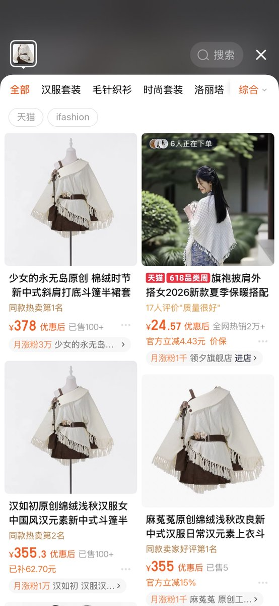
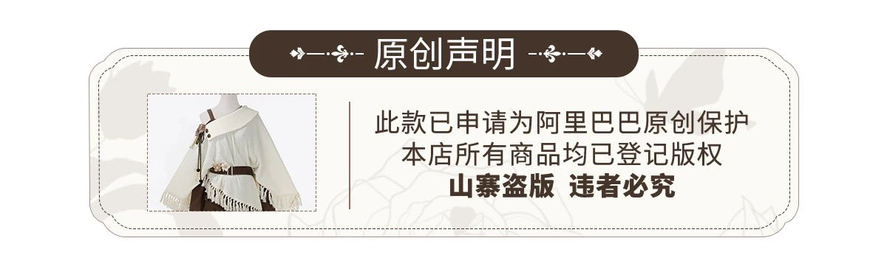
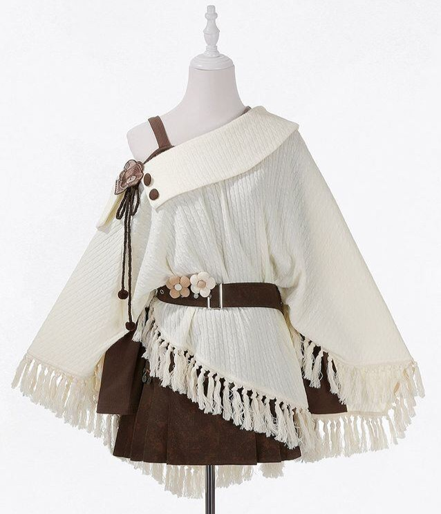

たたなこ
@tatanakots
觉得很好看所以上淘宝搜了一下看看有没有代购
但是却发现了很多直接使用相同图片并标记为原创的搜索结果，更神秘的是，两家不同的店铺使用同一张商品图并都宣称自己是原创，但是抄了就是抄了，大不了不写不就行了，为什么国内做裙子的商家这么喜欢宣称自己是“原创”呢？



Maiden's Rêve❤（メイデンズ・レーブ）
@Maidens_Reve
木漏れ日ポンチョ森ガールセットアップ♥ https://t.co/ky78XRLvoJ